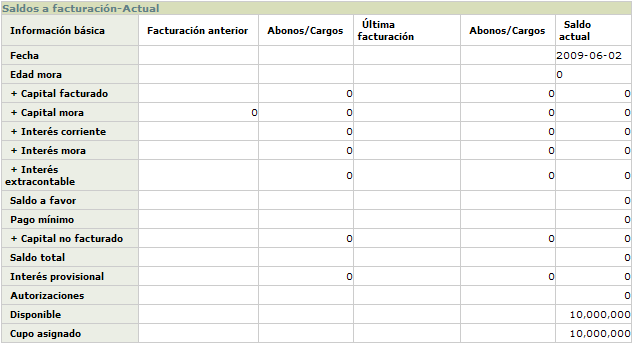

Saldos a facturación |
En este formulario que se invoca desde el detalle consulta de la tarjeta, en el hipervínculo información básica, saldos la entidad puede consultar la información acerca de los saldos de la tarjeta presentados para cada una de las distintas fechas de corte o facturación que ha tenido la tarjeta, reflejando así el comportamiento del crédito a través del tiempo.
La opción muestra al ingresar al formulario, los saldos a la fecha y de las dos últimas facturaciones pero cuenta con el hipervínculo Consulta histórico de saldos que le permite al usuario consultar la información de la tarjeta para fechas de facturación anteriores a las presentadas inicialmente. El formulario contiene las columnas abonos/cargos que contienen las afectaciones que los diferentes conceptos tuvieron entre las diferentes fechas de corte o facturación.
Descripci�n de campos
| Fecha |
Campo que muestra las fechas a las cuales corresponde la información desplegada en cada uno de los campos. |
|
Edad mora |
Este campo despliega la información de la edad o altura de mora que tenía la tarjeta para la fecha indicada. |
Capital facturado |
Muestra el valor correspondiente al capital diferido cobrado al cliente dentro del pago mínimo en cada una de las fechas. |
Capital
mora |
Campo en el que se muestra el monto de capital no cubierto por el cliente en las facturaciones anteriores para cada una de las fechas desplegadas. |
Interés
corriente |
En este campo se indica el valor del interés de financiación que la entidad le cobra el cliente por los saldos pendientes en cada fecha sobre los consumos efectuados y que se cobran dentro del pago mínimo. |
Interés
mora |
Campo que muestra para cada fecha el monto de los intereses de sanción generados por la entidad sobre las porciones de capital no cubiertas por el cliente en facturaciones anteriores. |
Interés
extracontable |
En este campo se indica el monto de los intereses que de acuerdo con la altura de mora o la calificación de la tarjeta, se causan sobre los saldos de la tarjeta en cada fecha o corte. |
Saldo
a favor |
Despliega el monto a favor del cliente en cada fecha o corte, resultante de pagos hechos en exceso, reversiones de transacciones de consumos y ajustes entre otras posibles causas. |
Pago
mínimo |
Campo que indica para cada fecha el monto que el actor debe cancelar para cubrir la obligación y no incurrir en mora. |
Capital
no facturado |
Muestra el monto de los consumos diferidos pendientes de facturar en cada corte y que no han sido incluidos aún dentro del pago mínimo. |
Saldo
total |
Este campo contiene el valor total adeudado por el cliente a la entidad en cada fecha o corte, como resultado de las utilizaciones y consumos hechos con la tarjeta. |
Interés
provisional |
Despliega para cada fecha el monto de los intereses calculados de manera provisional sobre transacciones que tengan la condición de condonar intereses el primer mes, de acuerdo con lo definido en transacciones por empresa. |
Autorizaciones |
Este campo que aplica solo para la fecha actual y señala el monto de las autorizaciones o aprobaciones otorgadas por la entidad y que se encuentran vigentes o sin cruzar. |
Disponible |
Campo que aplica únicamente para la fecha actual y en el que se muestra el valor del cupo que puede ser utilizado por el cliente para efectuar consumos con la tarjeta. |
Cupo
asignado |
En este campo que aplica solo para la fecha actual se muestra el cupo actual asignado a la tarjeta para la línea principal y las líneas independientes. |
Consulta histórico de saldos: si el actor invoca el hipervínculo Consulta histórico de saldos, se despliega un nuevo formulario en el cual se muestra al usuario la información correspondiente a los saldos que tenía la tarjeta en las fechas de facturación anteriores a las presentadas en el formulario inicial y que contiene también una columna denominada abonos/caragos que muestra las afectaciones que tuvieron los diferentes conceptos entre cada una de las facturaciones.
Los únicos campos adicionales que contiene este formulario son el Extracupo que indica los montos que por este concepto fueron utilizados por el cliente en cada fecha y Sobrecupo que despliega según el caso los montos en los cuales la tarjeta se excedió en los consumos o utilizaciones respecto del cupo asignado para cada fecha.
